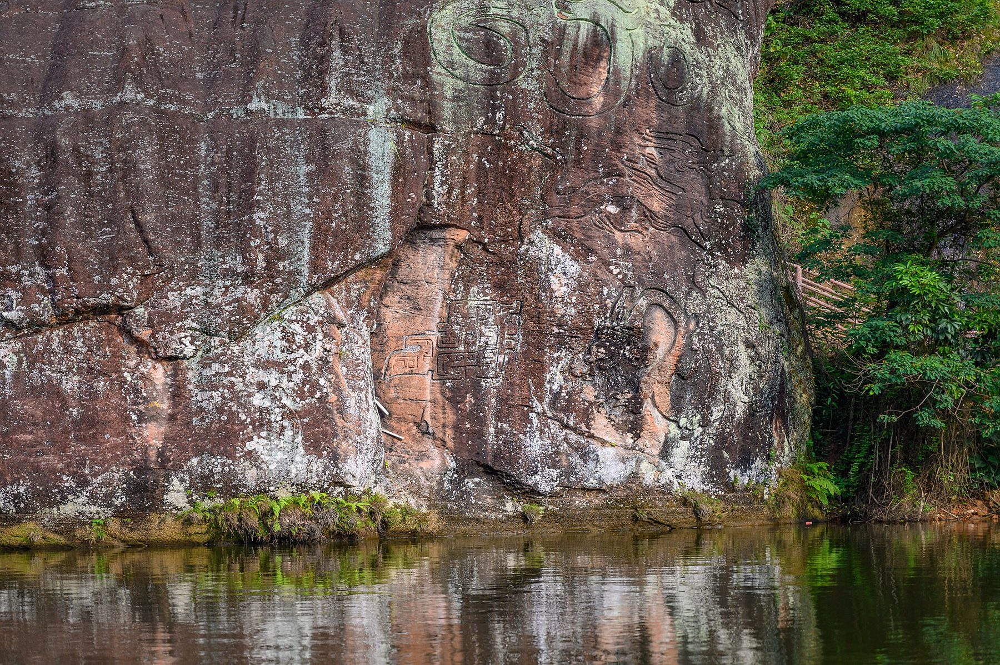
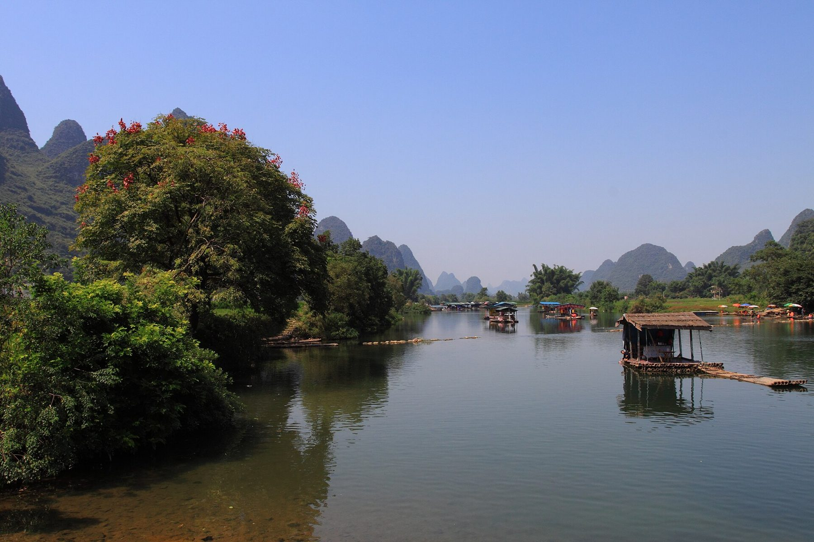
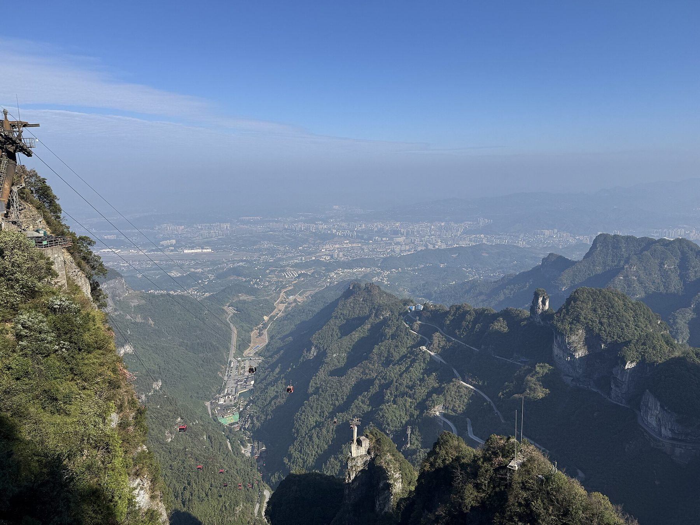
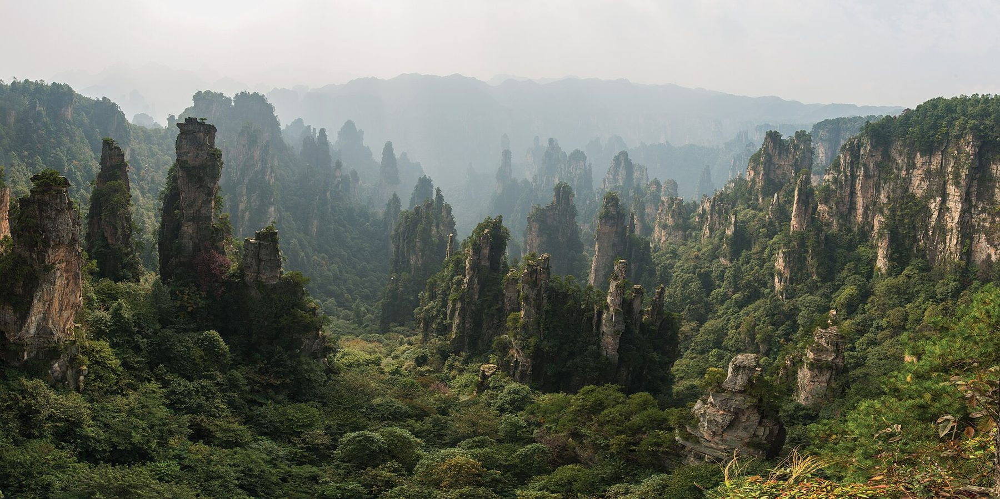
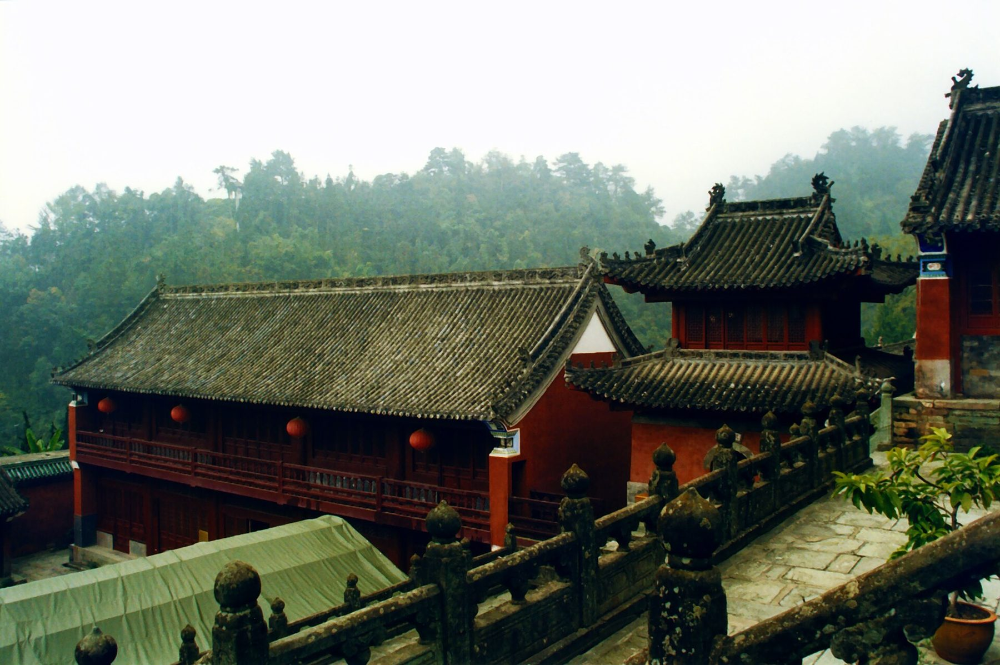
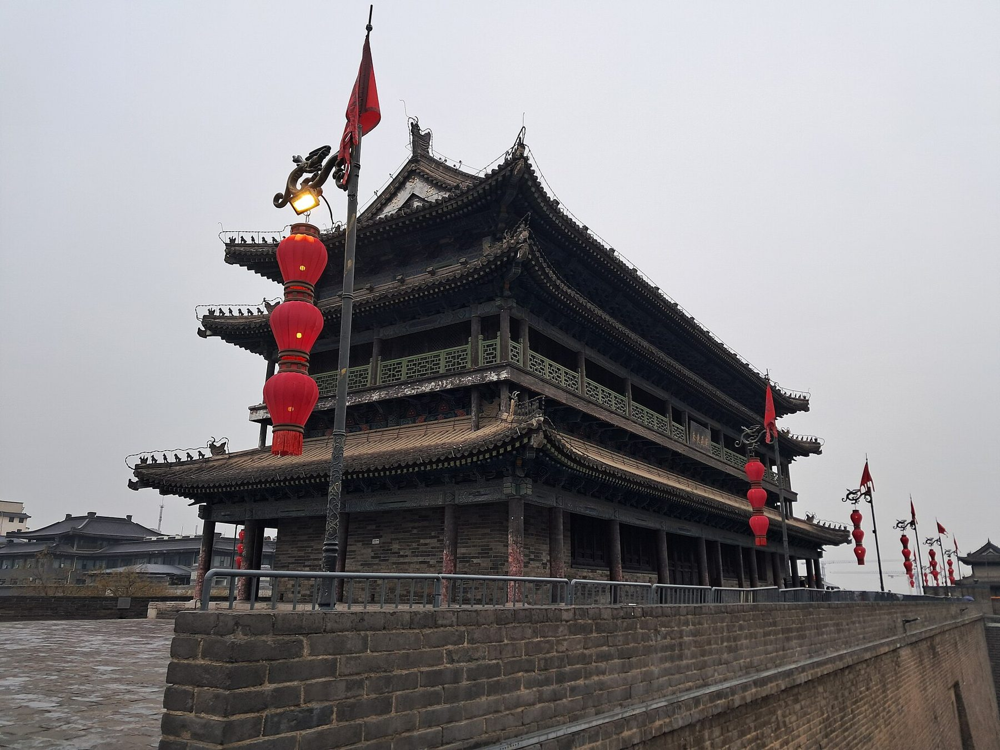

Shenzhen nach Xi'an · 11 Tage · Ende Oktober自驾 11 天 · 2026 年 10 月下旬
2 610 kmFahrstrecke行驶里程
5Provinzen个省份
3fahrfreie Tage天不开车
1 600 mhöchster Punkt最高点
Die Route路线
Rot die Fahrtage, gestrichelt die Ausweichrouten. Linie antippen zeigt die Etappe, die Knöpfe darunter zoomen auf einen Tag.红线是行车日，虚线是备选路线。点一下线路显示该段行程，下方按钮可放大到某一天。
Fahrtag行车日Ausweichroute备选路线Übernachtung住宿地
Streckenverlauf berechnet mit OSRM auf OpenStreetMap-Daten — zur Orientierung. Navigiert wird mit Amap, die Route dort kann abweichen.路线由 OSRM 基于 OpenStreetMap 数据计算，仅供参考。实际导航用高德地图，路线可能略有不同。
Wetter unterwegs沿途天气
Pro Tag der Ort, an dem ihr ihn verbringt. Die Vorhersage reicht 16 Tage voraus — sobald ein Reisetag in dieses Fenster fällt, ersetzt sie beim Öffnen der Seite automatisch den langjährigen Mittelwert. Karte antippen springt zur Etappe.每天显示你们当天所在的地方。天气预报最多提前 16 天——行程日期一旦进入这个范围，打开页面时就会自动用预报替换多年平均值。点卡片可跳到对应行程。
Mittelwerte 2011–2025, jeweils ±3 Tage um das Datum.2011–2025 年平均值，取当天前后各 3 天。
Lesen: Die Werte gelten fürs Tal. Oben auf dem Tianmen Shan, auf den Plateaus von Wulingyuan und am Qinling-Pass ist es fünf bis sieben Grad kälter. „Regen“ heisst beim Mittelwert: Anteil der Tage mit mindestens 1 mm; bei der Vorhersage: Regenwahrscheinlichkeit.说明：数值指山下谷地。天门山顶、武陵源的台地和秦岭垭口要冷五到七度。“降雨”在平均值里指日降水量至少 1 毫米的天数占比，在预报里指降雨概率。
Vor der Abfahrt出发前
Was vor Tag 1 erledigt sein muss. Der Rest lässt sich unterwegs regeln.第一天之前必须办好的事。其余的路上再解决。
Übersetzung des Führerausweises — organisiert, 250 RMB驾照翻译件——已办好，250 元
Temporäre Fahrerlaubnis beim Verkehrsamt Shenzhen abholen (Pass, Visum, Original-Ausweis, Übersetzung). Einen halben Tag einplanen, am besten am Ankunftstag.到深圳车管所领取临时驾驶许可（护照、签证、驾照原件、翻译件）。预留半天，最好在抵达当天办。
Mietvertrag mit Einweg-Rückgabe in Xi'an schriftlich bestätigen lassen — der Vertrag muss bei Polizeikontrollen mitgeführt werden.让租车公司书面确认可在西安异地还车——遇到警察检查时必须随车携带租车合同。
Amap (高德地图) und Alipay installieren, ausländische Karte in Alipay hinterlegen und einmal testen.安装高德地图和支付宝，在支付宝里绑定境外银行卡并试付一次。
Tickets nach der Liste unten buchen: Tianmen und Wulingyuan vor der Abfahrt, Damm ab 21. Oktober, Terrakotta ab 24. Oktober.按下面的清单订票：天门山和武陵源出发前订，三峡大坝 10 月 21 日起，兵马俑 10 月 24 日起。
Die Fahrerlaubnis ist nicht verhandelbar. China anerkennt weder den Schweizer Ausweis noch den internationalen Führerschein. Ohne temporäre chinesische Fahrerlaubnis ist jede Fahrt eine Fahrt ohne Führerausweis — mit den entsprechenden Folgen für Versicherung und Mietvertrag.驾驶许可没有商量余地。中国既不承认瑞士驾照，也不承认国际驾照。没有中国临时驾驶许可，每次开车都算无证驾驶——保险和租车合同也会随之失效。
Tickets门票
Fast alles läuft über Real-Name-Buchung mit Passnummer, meist in einem WeChat-Miniprogramm. Direkt verlinken lassen sich die nicht — Namen antippen kopiert ihn, dann in WeChat oben in die Suche einfügen. Bezahlt wird mit WeChat Pay über die hinterlegte Karte.几乎所有景点都要凭护照号实名预约，大多在微信小程序里。网页无法直接跳转过去——点一下名称即可复制，再粘贴到微信顶部的搜索框。用绑定了银行卡的微信支付付款。
四Sa 24.10.10/24 周六
Tianmen Shan天门山
Miniprogramm 张家界一机游 · rund 280 RMB mit beiden Seilbahnen und Rolltreppe小程序 张家界一机游 · 含两段索道和扶梯约 280 元
Jetzt buchen — vor Ort gibt es nur Tagestickets. Linie A wählen: Seilbahn ab Stadt hinauf, Schnellseilbahn hinunter.现在就订——现场只卖当日票。选 A 线：市区索道上山，快线索道下山。
Freischaltung 7 Tage vorher: am 24. Oktober buchen. Nur offizielle Kanäle, Drittanbieter sind nicht autorisiert.提前 7 天放票：10 月 24 日预约。只认官方渠道，第三方平台均未获授权。
Bis 7 Tage im Voraus, eine Kasse vor Ort gibt es nicht mehr.最多提前 7 天预约，现场已不设售票窗口。
Preise und Regeln Stand Sommer 2026. Die Miniprogramme bauen ihre Menüs gern um — beim Buchen kurz gegenprüfen.价格和规定截至 2026 年夏季。小程序的菜单经常改版——预约时再核对一下。
Das Auto车辆
Audi E5 Sportback oder Xiaomi YU7 — beide auf 800-Volt-Basis. Damit wird Laden auf dieser Route zur Nebensache.奥迪 E5 Sportback 或小米 YU7——都是 800 伏平台。在这条路线上，充电因此不算什么大事。
Audi E5 Sportback奥迪 E5 Sportback
Xiaomi YU7小米 YU7
Batterie netto电池净容量
79 oder 95 kWh79 或 95 kWh
71 oder 95 kWh71 或 95 kWh
Reichweite CLTCCLTC 续航
623–773 km
643–835 km
Realistisch Autobahn高速实际续航
ca. 430–520 km约 430–520 km
ca. 450–540 km约 450–540 km
DC-Spitze直流快充峰值
bis 420 kW最高 420 kW
bis 330 kW最高 330 kW
10–80 %
ca. 14 Min.约 14 分钟
ca. 18 Min.约 18 分钟
Die längste Etappe der Reise sind 450 km. Beide Autos schaffen das mit einem Zwischenstopp, der kürzer ist als das Mittagessen — oder bei der 95-kWh-Variante notfalls ohne. Plane trotzdem jeden Tag einen Stopp ein: In den Bergen bei Zhangjiajie und im Qinling steigt der Verbrauch deutlich, und Ende Oktober kostet die Heizung nachts zusätzlich Reichweite.全程最长的一段是 450 公里。两款车中途停一次就够，停的时间比吃午饭还短——95 kWh 版本必要时甚至不用停。不过还是每天安排一次充电：张家界一带的山区和秦岭里电耗明显上升，十月底夜里开暖风也会额外消耗续航。
Ladeinfrastruktur: Verlass dich auf State Grid, TELD (特来电) und Star Charge (星星充电) an den Raststätten der G-Autobahnen — die sind dicht und zuverlässig. Die markeneigenen Netze von Xiaomi und SAIC-Audi sind ausserhalb der Grossstädte noch dünn. Bezahlung läuft über Alipay-Miniprogramme; richte das in Shenzhen einmal in Ruhe ein, statt es an einer Raststätte in Hunan zum ersten Mal zu versuchen.充电设施：主要靠 G 字头高速服务区里的国家电网、特来电和星星充电——分布密集，也可靠。小米和上汽奥迪的品牌自建网络在大城市以外还很稀疏。付款走支付宝小程序；在深圳就从容地设置好，别等到湖南的服务区才第一次尝试。
Verfügbarkeit prüfen. Beide Modelle sind neu und in Mietflotten selten. Kläre vor der Buchung, welches Fahrzeug du tatsächlich bekommst — und ob der Vermieter eine Rückgabe in Xi'an überhaupt anbietet. Das ist erfahrungsgemäss der Punkt, an dem solche Pläne scheitern.先确认有车。两款车型都很新，租车公司里很少见。预订前问清楚实际能拿到哪辆车——以及对方到底支不支持在西安还车。按经验，这类计划往往就卡在这一步。
Laden unterwegs路上充电
Ladesäulen findet Amap: Die Knöpfe öffnen die Suche rund um euren Standort, mit Betreiber und Leistung. An der Säule dann den QR-Code mit dem Scanner in Alipay scannen — das öffnet das Miniprogramm des Betreibers direkt, die Anmeldung läuft über euer Alipay-Konto.充电桩用高德地图找：下面的按钮会搜索你们当前位置附近的充电站，并显示运营商和功率。到了充电桩，用支付宝“扫一扫”扫二维码——会直接打开运营商的小程序，用你们的支付宝账号登录。
Einen direkten Link in die Alipay-Miniprogramme von TELD 特来电 und Star Charge 星星充电 gibt es nicht öffentlich — für Guthaben oder Rechnungen den Namen kopieren und in Alipay suchen. Sätze für Probleme an der Säule stehen unter Notfall.特来电和星星充电的支付宝小程序没有公开的直达链接——要充值或开发票，复制名称后在支付宝里搜索。充电桩出问题时能用的句子见紧急情况。
Wo mieten在哪租车
Die Einweg-Rückgabe in Xi'an entscheidet über den Anbieter — bei den Gebühren liegen die grossen Vermieter um Welten auseinander. Gebucht wird in China fast immer über ein Miniprogramm in Alipay oder WeChat.能否在西安异地还车决定了选哪家——几家大租车公司的异地还车费相差悬殊。在中国几乎都是通过支付宝或微信小程序预订。
Erste Wahl首选
eHi一嗨租车一嗨租车
Einweg异地还车
Keine Rückgabegebühr, landesweit seit 2020. Der Tagespreis kann bei Einweg etwas höher liegen.免异地还车费，2020 年起全国适用。异地还车的日租价可能略高。
Autos车型
Grosse E-Flotte, Xiaomi-Modelle je nach Filiale电动车队规模大，有没有小米车型看门店
Ausländer外国人
Pass (noch ≥ 2 Monate gültig) plus temporäre Fahrerlaubnis werden akzeptiert接受护照（有效期剩余至少 2 个月）加临时驾驶许可
Kaution押金
Kreditkarte; kautionsfrei erst ab Sesame-Score 550 — den haben ausländische Alipay-Konten meist nicht信用卡；芝麻分 550 以上才免押金——外国人的支付宝账号通常没有芝麻分
Miniprogramme öffnen: Direkt verlinken lassen sie sich von einer Webseite aus nicht — WeChat erlaubt das nur dem Betreiber selbst, Alipay nur mit interner App-ID. Chinesischen Namen antippen kopiert ihn; in Alipay oder WeChat oben in die Suche einfügen und den offiziellen Eintrag wählen. Kaution und Zahlung laufen dann direkt über die hinterlegte Karte.打开小程序：网页无法直接跳转到小程序——微信只允许运营方自己这么做，支付宝需要内部 App ID。点一下中文名称即可复制，粘贴到支付宝或微信顶部的搜索框，选官方入口。押金和付款直接走绑定的银行卡。
Vor der Buchung fragen预订前先问清楚
Am schnellsten über den Kundenchat im Miniprogramm. Die Nachricht ist fertig formuliert — kopieren, einfügen, abschicken:最快的方式是小程序里的在线客服。消息已经写好——复制、粘贴、发送：
Abholung 21. Oktober in Shenzhen, Rückgabe 30. Oktober in Xi'an; Ausländer mit Pass und temporärer Fahrerlaubnis. Fragen: Einweg möglich und Gebühr? Kaution mit ausländischer Kreditkarte, wie hoch? Xiaomi YU7 oder Audi E5 garantiert? ETC-Box für die Maut an Bord?
Rückgabe am Abend von Tag 10 — am Tag in Xi'an braucht ihr kein Auto, das spart einen Miettag.第 10 天傍晚还车——在西安玩的那天用不着车，能省一天租金。
Die Etappen每日行程
Elf Tage, acht Fahrtage. Tippe auf die chinesischen Namen, um sie zu kopieren — direkt in Amap einfügen oder am Empfang vorzeigen. Die Amap-Knöpfe öffnen die Etappe mit Start, Ziel und Zwischenstopp in der App; als Start lässt sich dort mit einem Tipp 我的位置 (aktueller Standort) wählen. Unter „Übernachten“ klappen die Hotels auf, mit Fotos zum Durchwischen und Link zu trip.com: alle mit Bewertung über 9, Parkplatz und maximal 100 CHF. Die Preise sind Richtwerte für Ende Oktober unter der Woche — am Wochenende und in Xi'an wird es teurer, also mit euren Daten nachsehen.十一天，八天开车。高德按钮会在 App 里打开当天的路线，含起点、终点和途经点；起点可以一键改成“我的位置”。展开“住宿”可以看推荐酒店，照片可左右滑动，并附 trip.com 链接：全部评分 9 分以上、有停车位、每晚不超过 100 瑞郎。价格是十月底工作日的参考价——周末和西安会更贵，请用你们的日期再查。
Über die G4 nach Norden. Der Danxiashan ist die Namensgeberin der gesamten Danxia-Landform: Sandstein, den Eisenoxid tiefrot gefärbt hat, aufgebrochen zu Türmen und Steilwänden.沿 G4 一路向北。丹霞山是整个“丹霞地貌”的命名地：被氧化铁染成深红色的砂岩，崩裂成一座座石峰和峭壁。
Früh los. Sonnenuntergang ist Ende Oktober kurz vor 18 Uhr. Für das Abendlicht auf den Felsen brauchst du eine Ankunft gegen 15 Uhr — die Aussichtspunkte liegen weit auseinander. Huaqiangbei und das Kamera-Equipment also besser auf den Rückweg legen.早点出发。十月底日落在 18 点前不久。想拍夕阳照在岩壁上，15 点左右就得到——各个观景点相距很远。所以华强北买相机器材最好留到回程。

images/01-danxia.jpg
Danxiashan: rote Sandsteinwände über dem Jinjiang · Foto xiquinhosilva, CC BY 2.0丹霞山：锦江之上的红色砂岩峭壁 · 摄影 xiquinhosilva，CC BY 2.0Übernachten · Danxiashan住宿 · 丹霞山High Victory Hotel · Vienna Hotel · Isle Sojourn & Light Seek B&B胜高韵酒店 · 维也纳酒店 · 泊屿·寻光民宿
Standard 2-bed RoomYi Yun Selected Double Bed RoomYi Yun Selected Twin Room
Der stärkste Landschaftswechsel der ganzen Reise. Irgendwo hinter der Provinzgrenze stehen plötzlich die Karsttürme am Horizont und hören bis Yangshuo nicht mehr auf.全程景观变化最大的一天。过了省界不久，喀斯特峰林突然出现在地平线上，一直延续到阳朔。
Am Nachmittag Bambusfloss auf dem Yulong oder eine Runde mit dem Roller durch die Reisfelder Richtung Gaotian. Das Floss ist touristisch, der Fluss trotzdem schön — fahre spät, wenn die Busgruppen weg sind.下午在遇龙河坐竹筏，或者骑电动车穿过稻田往高田方向转一圈。竹筏很商业化，但河还是美——晚点去，等旅游团走了再坐。

images/02-yangshuo.jpg
Karstberge am Yulong bei Yangshuo · Foto Zhangzhugang, CC BY-SA 3.0阳朔遇龙河畔的喀斯特山峰 · 摄影 Zhangzhugang，CC BY-SA 3.0Übernachten · Yangshuo住宿 · 阳朔Shushe Shanse Hotel · BO Hotel · Yueman Hotel树舍山色云居 · BO·泊酒店 · 悦漫酒店
Die Stelzenhäuser über dem Tuo-Fluss sind tagsüber ein Touristenmagnet und abends eine andere Stadt. Wenn die roten Laternen angehen und sich im Wasser spiegeln, leert sich die Altstadt spürbar.沱江边的吊脚楼白天游客如织，晚上则像换了一座城。红灯笼亮起、倒映在水里的时候，古城明显清静下来。
Zeitplan: Spät ankommen ist hier kein Nachteil. Iss zuerst, geh danach los — die beste Stunde liegt zwischen 19:30 und 21:00.时间安排：这里晚到不吃亏。先吃饭，再出门——最好的时段是 19:30 到 21:00。
images/03-fenghuang.jpg
Die Stelzenhäuser von Fenghuang über dem Tuo · Foto chensiyuan, CC BY-SA 4.0凤凰沱江边的吊脚楼 · 摄影 chensiyuan，CC BY-SA 4.0Übernachten · Fenghuang住宿 · 凤凰Wenliyuan · Phoenix Story Hotel · Atour Jianye文里苑酒店 · 凤凰故事酒店 · 亚朵见野酒店
Superior 2-bed RoomDeluxe 2-bed RoomDeluxe Queen Room
Kurze Fahrt, spektakulärer Nachmittag. Die Seilbahn startet mitten in Zhangjiajie City und zieht fast 7,5 km am Stück den Berg hinauf. Oben warten das Himmelstor, die 999 Stufen und die gläsernen Klippenwege.车程短，下午很精彩。索道从张家界市区中心出发，一口气拉上将近 7.5 公里。山上有天门洞、999 级台阶和玻璃栈道。
Zeitfenster buchen. Der Einlass läuft über Zeitslots mit Real-Name-Registrierung. Ohne Vorbuchung kann der Nachmittag komplett ausfallen. Prüfe ausserdem die letzte Bergfahrt — im Oktober oft schon gegen 16 Uhr. Es ist Samstag: Die frühen Nachmittagsslots sind zuerst weg.预约时段。按时段实名预约入园。不提前订，整个下午可能泡汤。另外查一下上山末班索道——十月常常 16 点左右就停。当天是周六：下午早些的时段最先约满。

images/04-tianmen.jpg
Blick vom Tianmen Shan über die Schlucht, links die Seilbahn · Foto Codas, CC BY-SA 4.0从天门山俯瞰峡谷，左侧是索道 · 摄影 Codas，CC BY-SA 4.0Übernachten · Wulingyuan, 3 Nächte住宿 · 武陵源，3 晚Ibis Wulingyuan · FUNGEE S · Eryatou Inn · Manyuan Resort宜必思酒店 · 欢致S民宿 · 二丫头客栈 · 曼缘度假酒店
Superior 2-Bed RoomSuperior Queen RoomDeluxe Queen Room
Sonntag, und damit der vollste Tag im Park. Deshalb heute der Teil, der den Andrang besser verträgt: Tianzi Shan im Westen mit seinen weiten Aussichtsterrassen, dazu der Goldene Peitschenbach — ein flacher Talweg durch den Wald zwischen den Säulen, auf dem sich die Menschen verlaufen.周日是园区里人最多的一天。所以今天去更扛得住人流的部分：西边的天子山，观景台开阔；再加上金鞭溪——一条在石峰间林子里穿行的平缓溪谷步道，人多也能散开。
Die Beine danken es: Morgen kommen die Treppen von Yuanjiajie.腿会感谢你：明天还有袁家界的台阶。

images/05-wulingyuan.jpg
Tianzi Shan: die Quarzsandstein-Säulen von Wulingyuan · Foto chensiyuan, CC BY-SA 4.0天子山：武陵源的石英砂岩峰林 · 摄影 chensiyuan，CC BY-SA 4.0
Der Bailong-Aufzug bringt dich 326 Meter senkrecht die Felswand hinauf, danach Yuanjiajie mit der Brücke unter dem Himmel und den freistehenden Quarzsandstein-Säulen. Der berühmte Teil des Parks — darum auf den Montag gelegt. Voll wird es trotzdem ab zehn Uhr, aber ohne die Wochenend-Reisegruppen.百龙天梯沿着岩壁垂直上升 326 米，接着是袁家界的天下第一桥和一根根独立的石英砂岩石峰。这是园区最有名的部分——所以放在周一。十点以后照样会挤，但没有周末的旅游团。
Geh früh rein, mach den Nordteil vormittags und lass dir für den Nachmittag Zeit. Die Parkbusse fahren dicht getaktet, aber die Wege zwischen den Aussichtspunkten sind länger, als die Karte vermuten lässt.早点进园，上午走北线，下午放慢节奏。环保车班次很密，但观景点之间的步行路比地图上看起来长。
Wetterpuffer: Der Nebel, der die Berge auf den Fotos schweben lässt, ist im Oktober häufig — und kann ebenso gut alles zuziehen. Das Ticket gilt vier Tage, die Reihenfolge ist also nicht fix: Zeigt die Vorhersage oben für Sonntag klare Sicht und für Montag Regen, tauscht zurück und nehmt Yuanjiajie trotz Andrang am Sonntag.天气机动：照片里让群山像悬浮着的云雾，十月很常见——但也可能把什么都遮住。门票四天有效，顺序不是死的：如果上面的预报显示周日晴、周一有雨，就换回来，周日人多也去袁家界。
Raus aus den Bergen, rein in die Ebene am Jangtse. Zwischenstopp an der Stadtmauer von Jingzhou 荆州古城 — über sieben Kilometer Ming-zeitlicher Wall, erstaunlich vollständig und fast ohne Touristen.出山，进入长江边的平原。中途在荆州古城停一下——七公里多的明代城墙，保存得出奇完整，几乎没有游客。
Übernachtung in Yichang direkt am Ufer. Lade hier voll: Der Damm kostet morgen Zeit, nicht Strom, aber danach kommen 300 km.在宜昌住江边。在这里把电充满：明天的大坝耗的是时间不是电，但之后还有 300 公里。
Übernachten · Yichang住宿 · 宜昌Holiday Inn Express Riverside · Ease Hotel · Zhi · Wyndham Garden智选假日酒店 · 丽橙酒店·智 · 温德姆花园酒店
Der Damm braucht einen sauberen Vormittag: Sicherheitskontrolle mit Pass, Shuttlebusse, weitläufiges Gelände. Drei Stunden sind realistisch, nicht eineinhalb.大坝要留出整个上午：凭护照安检、换乘景区大巴、园区很大。实际要三个小时，不是一个半。
Am Nachmittag hinauf in die Wudang-Berge. Die daoistischen Tempelanlagen klammern sich an die bewaldeten Hänge, viele davon aus der Ming-Zeit. Abends wird es hier oben empfindlich frisch.下午上武当山。道教宫观依山而建，散落在林木茂密的山坡上，许多建于明代。晚上山上相当冷。
Warum das im Originalplan ein Tag war: Damm plus 300 km plus Ankunft im Hellen geht sich nicht aus. Durch die Übernachtung in Yichang am Vorabend hast du den Vormittag frei und bist gegen 17 Uhr oben.原计划的问题：大坝、300 公里、天黑前到达，一天之内排不下。前一晚住在宜昌，上午就空了出来，17 点左右能到山上。

images/06-wudang.jpg
Tempelanlagen in den Wudang-Bergen · Foto 涔水影人, CC BY 3.0武当山的宫观建筑 · 摄影 涔水影人，CC BY 3.0Übernachten · Wudangshan住宿 · 武当山Wudang Huihe Hotel · Xiyi Hotel · Wanda Yi武当汇和酒店 · 希怡酒店 · 万达颐华酒店
Ruhiger Vormittag in den Tempelwäldern, dann gemütlich an den Han-Fluss. Ankang ist kein Reiseziel, sondern ein guter Ort zum Durchatmen vor der Gebirgsüberquerung.上午在宫观和林间悠闲走走，然后不紧不慢地开到汉江边。安康不是旅游目的地，而是翻越秦岭前歇口气的好地方。
Akku auf 100 %. Morgen geht es über 1 600 Meter, und Heizung plus Steigung kosten spürbar.电池充到 100%。明天要翻过 1600 米，暖风加爬坡耗电明显。
Übernachten · Ankang住宿 · 安康MEHOOD LESTIE Binjiang · Hampton by Hilton · Joy Hotel美豪丽致酒店 · 希尔顿欢朋酒店 · 喜悦酒店
Delicate Twin RoomQueen Room With River ViewFeatured Elegant Room
Das Qinling ist die Wetter- und Wasserscheide zwischen Nord- und Südchina. Auf der Südseite Bambus und Reis, auf der Nordseite Löss und Weizen — der Wechsel passiert innerhalb einer Stunde.秦岭是中国南北的气候分界线和分水岭。南坡是竹林和稻田，北坡是黄土和麦田——一个小时之内就完成转换。
Zwei Varianten, und die Wahl entscheidet, ob dieser Tag der schönste oder der langweiligste der Reise wird.两种走法，选哪个决定了这一天是全程最美还是最无聊的一天。
G65 AutobahnG65 高速
G210 alte PassstrasseG210 老盘山公路
Strecke里程
ca. 250 km约 250 km
ca. 320 km约 320 km
Fahrzeit驾驶时间
ca. 3 h约 3 小时
5–6 h5–6 小时
Charakter特点
Zhongnanshan-Tunnel, 18 km, Tempo 80终南山隧道，18 km，限速 80
Serpentinen über den Pass, Dörfer, Aussicht盘山翻越垭口，村庄，风景
Das Missverständnis im Originalplan. Die Autobahn führt nicht über das Gebirge, sondern darunter durch: Der Zhongnanshan-Tunnel auf der G65 ist mit 18 km der längste zweiröhrige Strassentunnel Chinas. Von Kurven, Rekuperation und Aussicht bleibt dort nichts. Wer das Fahrerlebnis will, muss bewusst die alte Nationalstrasse G210 nehmen — dann aber früh losfahren und Xi'an erst am Abend erwarten.原计划里的误解。高速并不翻山，而是从山底下穿过去：G65 上的终南山隧道长 18 公里，是中国最长的双洞公路隧道。弯道、动能回收和风景，在那里统统没有。想要驾驶乐趣，就得特意走老国道 G210——那就要早出发，傍晚才能到西安。
Übernachten · Xi'an, 2 Nächte住宿 · 西安，2 晚Chengyu Chenghao Hotel · Himalaya Hotel · Atour Yongningli橙羽橙皓酒店 · 喜马拉雅酒店 · 永宁里亚朵酒店
Yongning Gate View Family RoomProsperous Chang'an Premier SuiteRefreshed Twin Room
Vormittags die Terrakotta-Armee 兵马俑 in Lintong, etwa 40 Minuten ausserhalb. Geh Halle 1 zuletzt — die kleineren Hallen und die Bronzewagen sind leerer und erklären, was du danach siehst.上午去临潼看兵马俑，离市区大约 40 分钟车程。一号坑放到最后——小一些的坑和铜车马人少，先看它们，再看一号坑更容易看懂。
Samstag in Xi'an. Die Terrakotta-Tickets werden sieben Tage vorher freigeschaltet — also am 24. Oktober buchen, dem Tianmen-Tag. Am Wochenende einen frühen Einlass-Slot nehmen.周六在西安。兵马俑门票提前七天放票——也就是在 10 月 24 日、去天门山那天预约。周末要选早一点的入场时段。
Nachmittags mit dem Leihrad die vollständigen 13,7 km auf der Stadtmauer. Eine Runde dauert knapp zwei Stunden, inklusive Anhalten.下午在城墙上租自行车，骑完整整 13.7 公里。连停带看，一圈不到两小时。
Abends muslimisches Viertel 回民街: handgezogene Nudeln, Roujiamo, Lammspiesse. Die Hauptgasse ist die touristische; bieg in die Seitengassen ab.晚上去回民街：拉面、肉夹馍、羊肉串。主街是给游客的，拐进旁边的小巷子。

images/07-xian.jpg
Die Stadtmauer von Xi'an · Foto Ideophagous, CC BY-SA 4.0西安城墙 · 摄影 Ideophagous，CC BY-SA 4.0
Alternative für Tag 7 und 8第 7、8 天的备选方案
Falls der Drei-Schluchten-Damm für euch verzichtbar ist.如果三峡大坝对你们来说可去可不去。
Der Umweg über Yichang ist ein Zickzack: erst nach Osten, dann nach Nordwesten. Wer den Damm streicht und stattdessen über Enshi 恩施 fährt, spart rund 150 km und bekommt mit der Enshi-Grand-Canyon-Schlucht eine Landschaft, die es mit Zhangjiajie aufnehmen kann — bei einem Bruchteil der Besucher.绕道宜昌是在走“之”字形：先往东，再往西北。放弃大坝、改走恩施，能少开约 150 公里，还能看到恩施大峡谷——风景足以和张家界相提并论，游客却少得多。
Der Damm ist beeindruckend gross, fotografisch aber undankbar: viel Beton, viel Dunst, feste Aussichtsplattformen. Wenn die Kamera der Grund für diese Reise ist, gewinnt Enshi.大坝规模震撼，但不出片：大片混凝土、雾气重、观景台位置固定。如果这趟是冲着拍照去的，恩施胜出。
Notfall紧急情况
Nummern antippen ruft direkt an. Sätze antippen zeigt sie bildschirmfüllend — Handy umdrehen und hinhalten.点号码直接拨打。点句子会全屏显示——把手机转过去给对方看。
Nach einem Unfall: Warnblinker, Warndreieck — auf der Autobahn mindestens 150 m hinter dem Auto — und alle hinter die Leitplanke. Mit Verletzten nichts verschieben, 120 und 122 rufen. Ohne Verletzte: Fotos von allen Seiten und vom Kennzeichen, dann sofort den Vermieter anrufen. Die Versicherung läuft über ihn, und er braucht die Meldung, bevor irgendetwas repariert wird.发生事故后：打开双闪、放三角警示牌——高速上至少放在车后 150 米——所有人撤到护栏外。有人受伤就不要挪车，拨打 120 和 122。没人受伤：从各个角度拍照，拍下车牌，然后立刻给租车公司打电话。保险由租车公司处理，任何维修之前都要先报给他们。
Unfall und Panne事故与故障
An der Ladesäule在充电桩
Unterwegs路上
Packen行李
Zwiebelprinzip. Ihr startet bei 27 Grad und endet bei einstelligen Nächten.多穿几层方便增减。出发时 27 度，到最后夜里只有个位数。
Warme Schicht für die Abende in Wudangshan und Zhangjiajie — dort sind nachts einstellige Temperaturen normal武当山和张家界的晚上要有保暖衣物——那里夜间个位数气温很正常
Regenjacke: der Nebel in Wulingyuan ist meistens auch Nässe雨衣：武陵源起雾时通常也很潮湿
Schuhe mit Profil — die Steintreppen im Park werden bei Feuchtigkeit glatt防滑鞋——景区的石阶一潮湿就很滑
Powerbank und Ladekabel fürs Auto; die Navigation frisst am Handy den ganzen Tag Strom充电宝和车载充电线；手机导航一整天很耗电
Pass immer dabei: Parkeintritte, Damm, Hotels und die Fahrerlaubnis laufen alle über Real-Name-Kontrolle护照随身带：景区门票、大坝、酒店和驾驶许可都要实名核验
Bargeld in kleinen Scheinen für Landstrassen-Raststätten带些小面额现金，国道边的服务区用得上